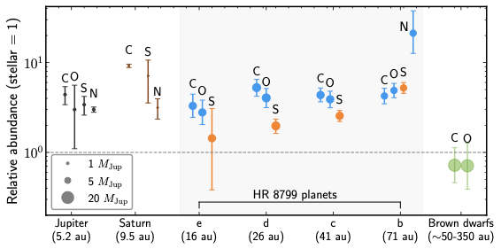
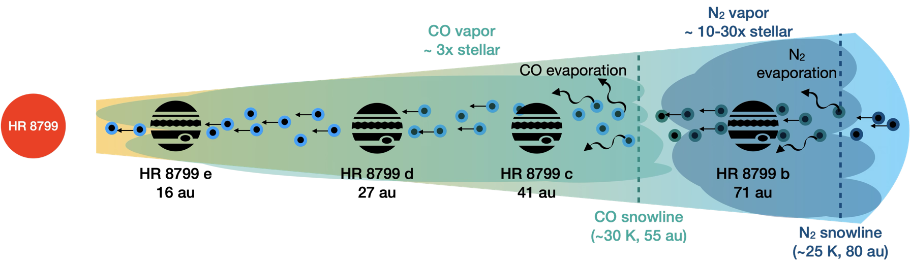
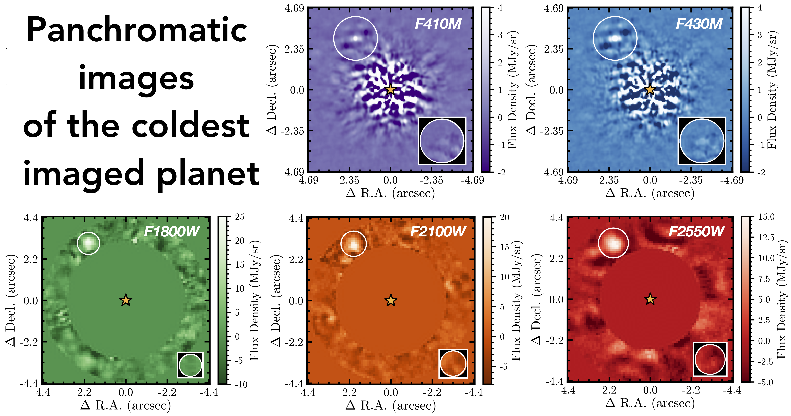
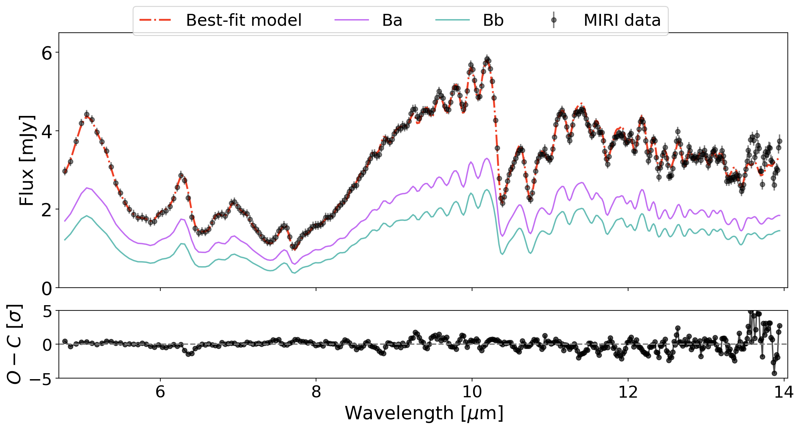
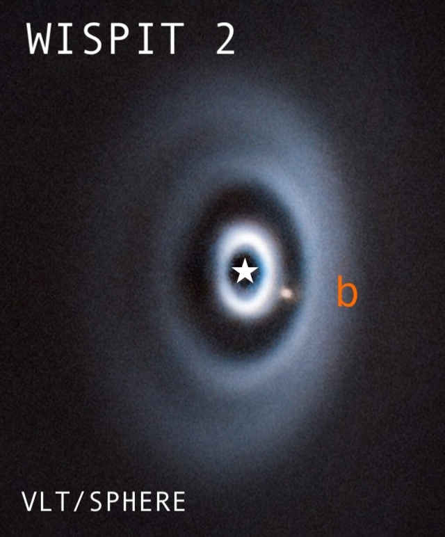

Key Results
- Leading 5 JWST programs as PI/Co-PI across Cycles 2-5, totaling more than 110 hours.
- Building a comprehensive JWST chemical survey of directly imaged companions to delineate planet and star formation pathways.
- Used H2S to measure S/H and show that directly imaged planets must accrete substantial amounts of solid material.
- Discovered that distant super-Jupiters (10–100 AU) are as metal-rich as Jupiter and close-in hot and warm Jupiters.
1. Metal Enrichment and Volatile-to-Refractory Abundances in the Four HR 8799 Planets

I led two atmospheric retrieval studies for the four gas giants around HR 8799 using exquisite 3-5 micron JWST/NIRSpec spectroscopy (R~2700). These iconic planets (5-9 MJup) orbit their star between 16-71 AU, and have posed challenges to planet formation theories. We obtained the first detections of H2S, CO2, CH4, and NH3 in these planets, and made the first direct measurements of solid accretion from S/H. These results mark a new era in precise atmospheric studies of directly imaged planets. Here's the press release story.

2. JWST Spectroscopy of the Young Jupiter Analog AF Lep b

PI: Xuan, Co-PIs: Jean-Baptiste Ruffio, Yapeng Zhang
I led a JWST Cycle 3 program to observe AF Lep b, one of the most Jupiter-like exoplanets in orbital distance amenable to detailed atmospheric characterization. I found that AF Lep b is as metal-rich as Jupiter and the HR 8799 planets. We also showed that these directly imaged planets have metal enrichments comparable to transiting gas giants. This similarity suggests that the process and efficiency of metal accretion for gas giants may not be strongly dependent on planet mass or orbital distance. You can check out the paper here.
3. JWST Panchromatic Spectroscopy of the First Imaged Mature Cold Jupiter

Sanghi et al. 2026PI: Xuan, Co-PIs: Aniket Sanghi, Jean-Baptiste Ruffio, Yapeng Zhang
I am leading a JWST Cycle 4 GO program to observe eps Indi Ab, the coldest directly imaged planet with Teff~275 K (Matthews et al. 2024). We have obtained a comprehensive SED from 4-25 microns, as well as brown dwarf-quality spectra to measure multiple elemental and isotopic abundance ratios (e.g. D/H, 15N/14N). The first paper from this program has been published by graduate student Aniket Sanghi, who presents the first 25 um image of any exoplanet to date. See: https://doi.org/10.3847/1538-3881/ae74c8
4. JWST 1-14 Micron Spectroscopy of the Iconic T Dwarf Binary Gliese 229 Bab

PI: Xuan
I am leading a JWST Cycle 2 GO program to acquire an extensive spectrum for Gl 229 Bab, now known to be a tight binary brown dwarf. The MIRI spectrum has been published in Xuan et al. 2024d. I found that the two brown dwarfs share the same chemical composition as their host star, as expected for formation via gravitational collapse.
5. A NIRSpec Spectroscopic Search for Astrometric Giant Planet Candidates at Solar System-like Scales
PI: Xuan, Co-PIs: William Thompson & Dori Blakely
I am leading a NIRSpec survey of nine nearby young stars to detect for the first time the most promising astrometric giant planet candidates on solar system-like scales (~5-10 au). Our program is expected to deliver 3-5 new planets (2-10 Jupiter masses) with dynamical masses and measure their atmospheric metallicities using 3-5 µm spectroscopy (R~2700). These planets bridge the gap between close-in Jupiters (~0.1 au) and distant super-Jupiters (~100 au), providing a key sample to study metal enrichment of gas giants in a previously inaccessible phase space.
6. Measuring the Composition and Circumplanetary Environment of a Gap-clearing Protoplanet

PI: Balmer, Co-PIs: Xuan & Choksi
We are using NIRCam and NIRSpec to characterize WISPIT 2b's accreting circumplanetary disk and atmosphere. Among other science, this program will provide a rare opportunity to connect information about a still-accreting protoplanet's location in the disk to its measured abundances.